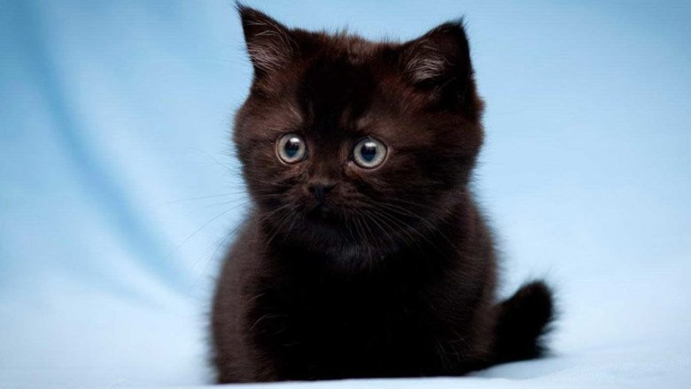

плачущий кот это не мем, это жизнь. верните котааааа x15ffjfffffffffffffffffffffffffffffffffffffffffffffffffffffffffffffffffffffffffffffffffffffffffffffffffffffffffffffffffffffffffffffffffffffffffffffffffffffffffffffffffffffffffffffffffffffffffffffffffffffffffffffffffffffffffffffffffffffffffffffffffffffffffffffffffffffffffffffffffffffffffffffffdkgggggggggggggggggggggggggggggggggggggggggggggggggggggggggggggggggggggggggggggggggggggggggggggggggggggggggggggggggggggggggggggggggggggggggggggggggggggggggggggggggggggggggggggggggggggggggggggggggggggggggggggggggggggggggggggggggggggggggggggggggggggggggggggggg
Среди владельцев котов на 17% больше людей с ученой степенью. Кошки не чувствуют сладкого вкуса. Мозг кошки похож на человеческий. За эмоции у кошек отвечают те же самые участки, что и у людей. Кошки трутся об людей, чтобы пометить их как свою территорию. В основном, кошки имеют более низкий социальный IQ, чем собаки, но могут решать более сложные когнитивные задачи, когда им это интересно. У кошек часто бывает непереносимость лактозы, поэтому перестаньте им давать молоко В мультиках врут: котов лучше не кормить сырой рыбой. Исааку Ньютону приписывают изобретение кошачьей двери. Мурчание кошки может быть способом самоизлечения, и в то же время знаком нервозности, а также удовлетворенности. Кошки спят около 70% своей жизни. Кошки производят около 100 различных звуков. Собаки — лишь 10. Длина самого крупного кота — 1,2319 метра. Кошки могут изменить свое «мяу», чтобы манипулировать человеком. Они имитируют голос ребёнка, когда нуждаются в пище, например. У кошек более 20 мышц отвечают за движение ушей. Сейчас в мире живет свыше 500 миллионов домашних кошек. Самая «кошачья» страна — это Австралия: на 10 человек приходится 9 кошек. Самое старое видео с кошками, размещенное на YouTube, было снято в 1894 году. Кошка по имени Дасти установила рекорд по численности потомства. За свою жизнь она родила 420 котят. У взрослых кошек 30 зубов. У котят — 26 временных, которые выпадают к 6 месяцам. Авраам Линкольн держал в Белом доме четырех котов. В оригинальной итальянской версии «Золушки» добрая крестная фея была кошкой. В Шотландии есть памятная башня в честь кота по имени Таузер, который поймал за свою жизнь почти 30 тысяч мышей. В средние века кошки ассоциировались с чёрной магией, и в День Святого Иоанна люди по всей Европе сжигали их на кострах. Во многих частях Европы и Северной Америки черная кошка считается плохим знаком, а в Великобритании и Австралии обозначает удачу. Поверхность носа у кошек так же уникальна, как отпечатки пальцев у людей. Если кошка оставляет свои испражнения непокрытыми, то это признак агрессии, чтобы вы знали: она не боится вас. Источник: https://katun24.ru/news/89362
